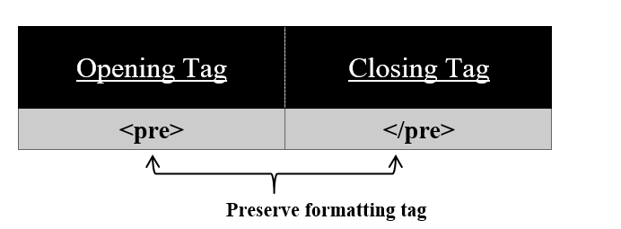

To put the exact code of any language use <pre> tag on your HTML page.
Syntax:
<pre>
//code of any programming language
</pre>
Preserve formatting itself defines preserving the format of the source document. The <pre> tag is used to put your content the same as it is on your HTML page. This tag has both an opening and a closing tag. Sometimes we need our text to be written on our HTML page the same as it is for that we use the <pre > tag.